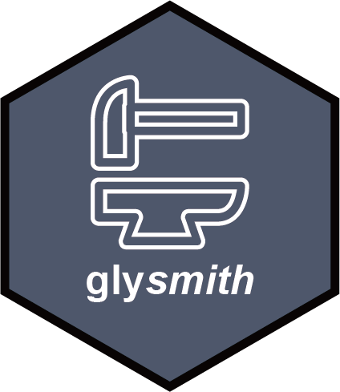

Step: Infer Glycan Structures
step_infer_structure.RdInfer glycan structures from the glycan_composition column in var_info.
This step uses glyanno::comp_to_struc() with a structure database from
glydb::glydb_structures() and keeps only variables with an inferred
structure.
This step requires exp (experiment data).
Arguments
- species
Species name used to restrict the glycan structure database. Default is
NULL, which does not restrict by species.- structure_level
Structure level passed to
glydb::glydb_structures(). One of"intact","topological", or"basic". Default is"topological".
Details
Data required:
exp: The experiment whose glycan structures should be inferred
Data generated:
uninferred_exp: The original experiment before structure inference
Tables generated:
inferred_structures: A table containing the inferred structure for each original variable and whether inference succeeded.
AI Prompt
This section is for AI in inquire_blueprint() only.
Include this step when the user requests structure-aware analysis but the experiment has glycan compositions and no glycan structures.
This step should be placed before
step_derive_traits(),step_quantify_dynamic_motifs(), orstep_quantify_branch_motifs().Mention that variables without inferred structures are removed.
Always ask for species restriction to improve inference accuracy, but allow users to skip it if they want.